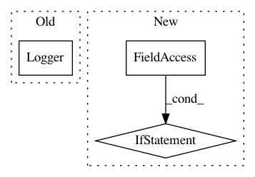

9e59ba9b9f9e1f292df5dd1ebd6dc55ec66d33b0,arch/cath.py,,main,#Any#Any#Any#Any#Any#Any#Any#Any#,505
Before Change
// Set the logger
if tensorflow_available:
logger = Logger("./logs")
if args.mode == "train":
for epoch in range(epoch_start_index, 100):
After Change
epoch_start_index = checkpoint_index+1
// Set the logger
if args.log_to_tensorboard:
from datetime import datetime
now = datetime.now()
logger = Logger("./logs/%s/" % now.strftime("%Y%m%d_%H%M%S"))
if args.mode == "train":
for epoch in range(epoch_start_index, 100):
In pattern: SUPERPATTERN
Frequency: 3
Non-data size: 3
Instances
Project Name: mariogeiger/se3cnn
Commit Name: 9e59ba9b9f9e1f292df5dd1ebd6dc55ec66d33b0
Time: 2018-03-02
Author: wouterboomsma@gmail.com
File Name: arch/cath.py
Class Name:
Method Name: main
Project Name: jwyang/faster-rcnn.pytorch
Commit Name: 21f9151d745c57671661baff3272d544a56f7bbe
Time: 2018-08-27
Author: jw2.yang@gmail.com
File Name: trainval_net.py
Class Name:
Method Name:
Project Name: Scitator/catalyst
Commit Name: 4a5553d8cbebe2b2c0884072b52da4b9b94f5100
Time: 2019-02-27
Author: scitator@gmail.com
File Name: catalyst/dl/state.py
Class Name: RunnerState
Method Name: __init__